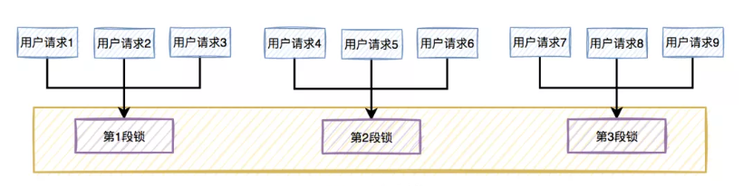
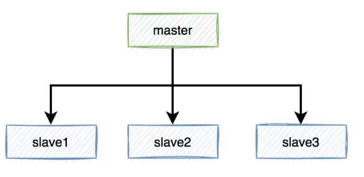
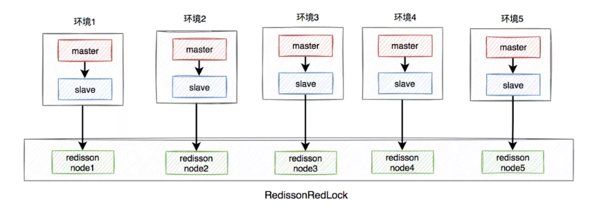

分布式锁Redis
分布式锁Redis
2 Redis分布式锁
用到分布式锁说明遇到了多个进程共同访问同一个资源的问题， 一般是在两个场景下会防止对同一个资源的重复访问：
- 提高效率。比如多个节点计算同一批任务，如果某个任务已经有节点在计算了，那其他节点就不用重复计算了，以免浪费计算资源。不过重复计算也没事，不会造成其他更大的损失。也就是允许偶尔的失败。
- 保证正确性。加分布式锁同样可以避免破坏正确性的发生，如果两个节点在同一条数据进行操作（update增加/减少），比如多个节点机器对同一个订单操作不同的流程有可能会导致该笔订单最后状态出现错误，造成损失。这种情况对锁的要求就很高了，如果重复计算，会对正确性造成影响。这种不允许失败。-----举例：关闭超时未支付订单，恢复库存
- 数据库
- redis
- 多进程可见：多进程可见，否则就无法实现分布式效果
- 避免死锁：死锁的情况有很多，我们要思考各种异常导致死锁的情况，保证锁可以被释放
- 排它：同一时刻，只能有一个进程获得锁
- 高可用：避免锁服务宕机或处理好宕机的补救措施(redis集群架构：1.主从复制 2.哨兵 3.cluster集群)
- 多进程可见：多进程可见，否则就无法实现分布式效果
- 排它：同一时刻，只能有一个进程获得锁
- 避免死锁：死锁的情况有很多，我们要思考各种异常导致死锁的情况
- 高可用：避免锁服务宕机或处理好宕机的补救措施
- 1、通过setnx命令设置锁
- 2、判断返回结果是否是OK
- 3、异常情况，服务宕机。超时时间EX结束，会自动释放锁
- 创建demo工程
redis_lock_demo - 在redis_lock_demo工程中引入依赖
- 在redis_lock_demo工程创建com.itheima包 新建启动类
- 在redis_lock_demo工程定义一个锁接口：
- 在redis_lock_demo工程在com.itheima.lock.impl中定义实现类实现版本一分布式锁
- 在
redis_lock_demo模块中com.itheima.task包下定时任务中使用锁： - 三个进程：A和B和C，在执行任务，并行争抢锁，此时A获取了锁，并设置自动过期时间为10s
- A开始执行业务，因为某种原因，业务阻塞，耗时超过了10秒，此时锁自动释放了
- B恰好此时开始尝试获取锁，因为锁已经自动释放，成功获取锁
- A此时业务执行完毕，执行释放锁逻辑（删除key），于是B的锁被释放了，而B其实还在执行业务
- 此时进程C尝试获取锁，也成功了，因为A把B的锁删除了。
- key:lock
- value:加入当前执行任务线程信息
- key：lock锁名称
- hashKey：线程信息
- hashValue：重入次数，默认1
- 1、判断lock是否存在
EXISTS lock - 1、判断当前线程id作为hashKey是否存在：
HEXISTS lock threadId - 2、判断重入次数是否为0：
- 原子性：redis会将整个脚本作为一个整体执行，不会被其他命令插入。
- 复用：客户端发送的脚本会永久存在redis中，以后可以重复使用，而且各个Redis客户端可以共用。
- 高效：Lua脚本解析后会形成缓存，不用每次执行都解析。
- 减少网络开销：Lua脚本缓存后，可以形成SHA值，作为缓存的key，以后调用可以直接根据SHA值来调用脚本，不用每次发送完整脚本，较少网络占用和时延
- script：脚本内容，或者脚本地址
- numkeys：脚本中用到的key的数量，接下来的numkeys个参数会作为key参数，剩下的作为arg参数
- key：作为key的参数，会被存入脚本环境中的KEYS数组，角标从1开始
- arg：其它参数，会被存入脚本环境中的ARGV数组，角标从1开始
"return 'hello world!'"：就是脚本的内容，直接返回字符串，没有别的命令0：就是说没有用key参数，直接返回- sha1：就是脚本对应的sha1值
- 'set'：就是执行set 命令
- KEYS[1]：从脚本环境中KEYS数组里取第一个key参数
- ARGV[1]：从脚本环境中ARGV数组里取第一个arg参数
- 1：声明key只有一个，接下来的第一个参数作为key参数
- name：key参数，会被存入到KEYS数组
- Jack：arg参数，会被存入ARGV数组
- 可以看到num一开始是321。
- 我们保存脚本，
- 然后执行并传递num，400。判断num是否大于400，
- 结果返回0.
- KEYS[1]：就是锁的名称key redisKey
- ARGV[1]：就是线程id信息 hashKey
- ARGV[2]：锁过期时长
RedisScript：封装了Lua脚本的对象script List：脚本中的key的值keys Object ... args：脚本中的参数的值String script：Lua脚本Class：返回值类型resultType - 三个参数：获取锁，设置锁等待时间
waitTime、释放时间leaseTime，时间单位unit。 - 两个参数：获取锁，设置锁等待时间
time、时间单位unit。释放时间leaseTime按照默认的30s - 空参：获取锁，
waitTime默认0s，即获取锁失败不重试，leaseTime默认30s
例如：调用某个开发平台，获取访问令牌（有有效期），缓存到redis中，如果redis没有调用方法获取访问令牌。集群环境下回出现重复获取访问令牌导致账户被封禁。
实现分布式锁：
- 表：提供一张表 通过是否有记录表示锁是否被其他进程获取了
- 悲观锁：for update ； select 库存 for update; 更新库存 update 库存
- 乐观锁：线程一：查询库存 得到记录版本号：1 修改库存：update 库存+1 where 当前版本号=记录版本号。线程二：查询修改之间修改记录 版本号：2
因为Redis具备高性能、高可用、高并发的特性，这里，我们会采用Redis来实现分布式锁。
2.1 Redis分布式锁原理
上面讲过，分布式锁的关键是多进程共享的内存标记(锁)，因此只要我们在Redis中放置一个这样的标记(数据)就可以了。不过在实现过程中，不要忘了我们需要实现下列目标：
尝试获取锁
成功：执行业务代码 执行业务 try（）{业务代码-宕机} catch() finally{ 释放锁}
失败：等待；失效；下次
在Redis中我们可以用下面的方式来解决上述问题：
- redis本身就是多服务共享的，因此自然满足
- 我们需要利用Redis的setnx命令来实现，setnx是set when not exits的意思。当多次执行setnx命令时，只有第一次执行的才会成功并返回1，其它情况返回0：
- 
- 我们定义一个固定的key，多个进程都执行setnx，设置这个key的值，返回1的服务获取锁，0则没有获取
- 比如服务宕机后的锁释放问题，我们设置锁时最好设置锁的有效期，如果服务宕机，有效期到时自动删除锁。

- 利用Redis的主从、哨兵、集群，保证高可用
2.2 分布式锁版本1
2.2.1 流程
按照上面所述的理论，分布式锁的流程大概如下：

基本流程：
- 1）Nil，获取失败，结束或重试（自旋锁）
- 2）OK，获取锁成功
- 执行业务
- 释放锁，DEL 删除key即可
2.2.2 代码实现
<parent>
<groupId>org.springframework.boot</groupId>
<artifactId>spring-boot-starter-parent</artifactId>
<version>2.1.7.RELEASE</version>
<relativePath/>
</parent>
<dependencies>
<dependency>
<groupId>org.springframework.boot</groupId>
<artifactId>spring-boot-starter-web</artifactId>
</dependency>
<dependency>
<groupId>org.springframework.boot</groupId>
<artifactId>spring-boot-starter-test</artifactId>
<scope>test</scope>
</dependency>
<dependency>
<groupId>org.springframework.boot</groupId>
<artifactId>spring-boot-starter-data-redis</artifactId>
</dependency>
<dependency>
<groupId>org.projectlombok</groupId>
<artifactId>lombok</artifactId>
</dependency>
<dependency>
<groupId>org.redisson</groupId>
<artifactId>redisson</artifactId>
<version>3.10.6</version>
</dependency>
</dependencies>
package com.itheima;
import org.springframework.boot.SpringApplication;
import org.springframework.boot.autoconfigure.SpringBootApplication;
import org.springframework.scheduling.annotation.EnableScheduling;
@EnableScheduling
@SpringBootApplication
public class LockRedisApplication {
public static void main(String[] args) {
SpringApplication.run(LockRedisApplication.class, args);
}
}
package com.itheima.lock;
public interface RedisLock {
/*
尝试获取锁
@param expiretime 锁释放时间 单位为秒
@return
/
public Boolean tryLock(Long expiretime);
/*
释放锁方法
/
public void unLock();
}
package com.itheima.lock.impl;
import com.itheima.lock.RedisLock;
import jdk.nashorn.internal.runtime.FindProperty;
import org.springframework.data.redis.core.StringRedisTemplate;
import java.nio.channels.Pipe;
import java.util.concurrent.TimeUnit;
/
@author: itheima
@create: 2021-11-08 09:51
/
public class RedisLockV1 implements RedisLock {
public StringRedisTemplate redisTemplate;
private static final String redisKey = "lock";
private static final String redisVal = "lock";
/*
通过构造传入操作redis的RedisTemplate对象
/
public RedisLockV1(StringRedisTemplate redisTemplate) {
this.redisTemplate = redisTemplate;
}
/
尝试获取锁方法 执行redis指令 setnx
@param expiretime 锁释放时间 单位为秒
@return
/
@Override
public Boolean tryLock(Long expiretime) {
Boolean flag = redisTemplate.opsForValue().setIfAbsent(redisKey, redisVal, expiretime, TimeUnit.SECONDS);
return flag;
}
/*
释放锁方法
/
@Override
public void unLock() {
redisTemplate.delete(redisKey);
}
}
package com.itheima.task;
import com.itheima.lock.RedisLock;
import com.itheima.lock.impl.RedisLockV1;
import lombok.extern.slf4j.Slf4j;
import org.springframework.beans.factory.annotation.Autowired;
import org.springframework.data.redis.core.StringRedisTemplate;
import org.springframework.scheduling.annotation.Scheduled;
import org.springframework.stereotype.Component;
/
@author: itheima
@create: 2021-09-26 09:42
/
@Slf4j
//@Component
public class DemoTask {
@Autowired
private StringRedisTemplate redisTemplate;
/*
模拟定时查询待审核文档，调用阿里云内容安全审核内容，增加积分
/
@Scheduled(cron = "0/1 ?")
public void task(){
//1.尝试获取锁
RedisLock lock = new RedisLockV1(redisTemplate);
//2.获取锁结果
Boolean flag = lock.tryLock(5L);
//2.1 失败，下次继续尝试获取
if(!flag){
log.error("获取锁失败，下次继续尝试获取！");
return;
}
//2.2 成功，执行业务
try {
log.info("获取锁成功");
log.info("-------执行任务-----");
Thread.sleep(500);
} catch (Exception e) {
e.printStackTrace();
lock.unLock();
} finally {
//3.释放锁
log.info("释放锁");
lock.unLock();
}
}
}

2.3 分布式锁版本2
刚才的锁有没有什么问题？
2.3.1 释放锁的问题
大家思考一下，释放锁就是用DEL语句把锁对应的key给删除，有没有这么一种可能性：
问题出现了：B和C同时获取了锁，违反了排它性！

如何解决这个问题呢？我们应该在删除锁之前，判断这个锁是否是自己设置的锁，如果不是（例如自己的锁已经超时释放），那么就不要删除了。
那么问题来了：如何得知当前获取锁的是不是自己呢？
对了，我们可以在set 锁（val）时，存入自己的线程信息！删除锁前，判断下里面的值是不是与自己相等，如果不等，就不要删除了。
2.3.2 流程图
来看下流程的变化：

在释放锁之前，多了一步根据判断，判断锁的value释放跟自己存进去的一致。
改进--存入redis值
2.3.4 代码实现
在redis_lock_demo模块中com.itheima.lock.impl包下新建SimpleRedisLockV2实现方式二
package com.itheima.lock.impl;
import com.itheima.lock.RedisLock;
import lombok.extern.slf4j.Slf4j;
import org.springframework.data.redis.core.StringRedisTemplate;
import java.util.UUID;
import java.util.concurrent.TimeUnit;
/
@author: itheima
@create: 2021-11-08 09:51
/
@Slf4j
public class RedisLockV2 implements RedisLock {
public StringRedisTemplate redisTemplate;
private static final String redisKey = "lock";
private static final String redisVal_prefix = UUID.randomUUID().toString();
/*
通过构造传入操作redis的RedisTemplate对象
/
public RedisLockV2(StringRedisTemplate redisTemplate) {
this.redisTemplate = redisTemplate;
}
/
尝试获取锁方法 执行redis指令 setnx
@param expiretime 锁释放时间 单位为秒
@return
/
@Override
public Boolean tryLock(Long expiretime) {
//存入线程信息
String redisVal = redisVal_prefix+Thread.currentThread().getId()+"-"+Thread.currentThread().getName();
Boolean flag = redisTemplate.opsForValue().setIfAbsent(redisKey, redisVal, expiretime, TimeUnit.SECONDS);
return flag;
}
/*
释放锁方法
/
@Override
public void unLock() {
/
删除锁判断锁是否为当前线程的
/
//1.先从redis中获取目前存在锁的值
String redisLoclVal = redisTemplate.opsForValue().get(redisKey);
//2.获取当前线程锁的值
String currentThreadLockVal = redisVal_prefix + Thread.currentThread().getId() + "-" + Thread.currentThread().getName();
if(currentThreadLockVal.equals(redisLoclVal)){
log.info("锁是自己线程，释放锁");
redisTemplate.delete(redisKey);
}else{
log.error("锁不是自己的，不处理");
}
}
}
修改任务中锁对象改为V2

2.4 分布式锁版本3
刚才的锁有没有什么问题？
如果我们在获取锁以后，执行代码的过程中，再次尝试获取锁，执行setnx肯定会失败，因为锁已经存在了。这样就是不可重入锁，有可能导致死锁。
如何解决呢？
当然是想办法改造成可重入锁。
2.4.1 重入锁
什么叫做可重入锁呢？
> 可重入锁，也叫做递归锁，指的是在同一线程内，外层函数获得锁之后，内层递归函数仍然可以获取到该锁。换一种说法：同一个线程再次进入同步代码时，可以使用自己已获取到的锁。
可重入锁可以避免因同一线程中多次获取锁而导致死锁发生。
那么，如何实现可重入锁呢？
其中的关键，就是在锁已经被使用时，判断这个锁是否是自己的，如果是则再次获取。
我们可以在set锁的值是，存入获取锁的线程的信息，这样下次再来时，就能知道当前持有锁的是不是自己，如果是就允许再次获取锁。
要注意，因为锁的获取是可重入的，因此必须记录重入的次数，这样不至于在释放锁时一下就释放掉，而是逐层释放。因此，不能再使用简单的key-value结构，这里推荐使用hash结构：
Map
释放锁时，每次都把重入次数减一，减到0说明多次获取锁的逻辑都执行完毕，才可以删除key，释放锁
2.4.2 流程图
这里重点是获取锁的流程：

下面我们假设锁的key为“lock”，hashKey是当前线程的id：“threadId”，锁自动释放时间假设为20
获取锁的步骤：
- 存在，说明有人获取锁了，下面判断是不是自己的锁
- 判断当前线程id作为hashKey是否存在：HEXISTS lock threadId
- 不存在，说明锁已经有了，且不是自己获取的，锁获取失败，end
- 存在，说明是自己获取的锁，重入次数+1：HINCRBY lock threadId 1，去到步骤3
- 2、不存在，说明可以获取锁，HSET key threadId 1
- 3、设置锁自动释放时间，EXPIRE lock 20
释放锁的步骤：
- 不存在，说明锁已经失效，不用管了
- 存在，说明锁还在，重入次数减1：HINCRBY lock threadId -1，获取新的重入次数
- 为0，说明锁全部释放，删除key：DEL lock
- 大于0，说明锁还在使用，重置有效时间：EXPIRE lock 20
2.4.3 实现分析
上述流程有一个最大的问题，就是有大量的判断，这样在多线程运行时，会有线程安全问题，除非能保证执行
命令的原子性。
因此，这里使用java代码无法实现，那该怎么办呢？
Redis支持一种特殊的执行方式：lua脚本执行，lua脚本中可以定义多条语句，语句执行具备原子性。
2.5 Redis的Lua脚本（了解）
其实实现Redis的原子操作有多种方式，比如Redis事务，但是相比而言，使用Redis的Lua脚本更加优秀，具有不可替代的好处：
2.5.1 Redis脚本命令：
通过下面这个命令，可以看到所有脚本相关命令：
help @scripting
我们看一些常用命令
> EVAL命令：

直接执行一段脚本，参数包括：
示例：EVAL "return 'hello world!'" 0，其中：
效果：

> SCRIPT LOAD命令

将一段脚本编译并缓存起来，生成一个SHA1值并返回，作为脚本字典的key，方便下次使用。
参数script就是脚本内容或地址。
以之前案例中的的脚本为例：

此处返回的ada0bc9efe2392bdcc0083f7f8deaca2da7f32ec就是脚本缓存后得到的sha1值。
在脚本字典中，每一个这样的sha1值，对应一段解析好的脚本：

> EVALSHA 命令：

与EVAL类似，执行一段脚本，区别是通过脚本的sha1值，去脚本缓存中查找，然后执行，参数：
我们用刚刚缓存的脚本为例：

2.5.2 Lua基本语法
Lua脚本遵循Lua的基本语法，这里我们简单介绍几个常用的：
> redis.call()和redis.pcall()
这两个函数是调用redis命令的函数，区别在于call执行过程中出现错误会直接返回错误；pcall则在遇到错误后，会继续向下执行。基本语法类似：
redis.call("命令名称", 参数1， 参数2 ...)
例如这样的脚本：return redis.call('set', KEYS[1], ARGV[1])
完整示例：

执行这段脚本时传入的参数：
> 条件判断和变量
条件判断语法：if (条件语句) then ...; else ...; end;
变量接收语法：local num = 123;
示例：
local val = redis.call('get', KEYS[1]);
if (val > ARGV[1]) then
return 1;
else
return 0;
end;
基本逻辑：获取指定key的值，判断是否大于指定参数，如果大于则返回1，否则返回0
执行：

2.5.3 编写分布式锁脚本
这里我们假设有3个参数：
首先是获取锁：
if (redis.call('EXISTS', KEYS[1]) == 0) then //判断锁不存在
redis.call('HSET', KEYS[1], ARGV[1], 1);
redis.call('EXPIRE', KEYS[1], ARGV[2]);
return 1;
end;
if (redis.call('HEXISTS', KEYS[1], ARGV[1]) == 1) then //判断锁是否是线程自己的
redis.call('HINCRBY', KEYS[1], ARGV[1], 1);
redis.call('EXPIRE', KEYS[1], ARGV[2]);
return 1;
end;
return 0;
然后是释放锁：
if (redis.call('HEXISTS', KEYS[1], ARGV[1]) == 0) then
return nil;
end;
local count = redis.call('HINCRBY', KEYS[1], ARGV[1], -1);
if (count > 0) then
redis.call('EXPIRE', KEYS[1], ARGV[2]);
return nil;
else
redis.call('DEL', KEYS[1]);
return nil;
end;
2.5.4 Java执行Lua脚本
RedisTemplate中提供了一个方法，用来执行Lua脚本：

包含3个参数：
因此，要执行Lua脚本，我们需要先把脚本封装到RedisScript对象中，有两种方式来构建RedisScript对象：
> 方式1：
通过RedisScript中的静态方法：

这个方法接受两个参数：
需要把脚本内容写到代码中，作为参数传递，不够优雅。
> 方式二
另一种方式，就是自己去创建RedisScript的实现类DefaultRedisScript的对象：

可以把脚本文件写到classpath下的某个位置，然后通过加载这个文件来获取脚本内容，并设置给DefaultRedisScript实例。
此处我们选择方式二。
2.5.5 可重入分布式锁的实现
首先在classpath中编写两个Lua脚本文件：

然后编写一个新的RedisLock实现：ReentrantRedisLock，利用静态代码块来加载脚本并初始化：

public class ReentrantRedisLock {
// 获取锁的脚本
private static final DefaultRedisScript<Long> LOCK_SCRIPT;
// 释放锁的脚本
private static final DefaultRedisScript<Object> UNLOCK_SCRIPT;
static {
// 加载获取锁的脚本
LOCK_SCRIPT = new DefaultRedisScript<>();
LOCK_SCRIPT.setScriptSource(new ResourceScriptSource(new ClassPathResource("lock.lua")));
LOCK_SCRIPT.setResultType(Long.class);
// 加载释放锁的脚本
UNLOCK_SCRIPT = new DefaultRedisScript<>();
UNLOCK_SCRIPT.setScriptSource(new ResourceScriptSource(new ClassPathResource("unlock.lua")));
}
// 其它代码略
}
然后实现RedisLock并实现lock和unlock方法，完整代码如下：
public class ReentrantRedisLock implements RedisLock {
private StringRedisTemplate redisTemplate;
/
设定好锁对应的 key
/
private String key;
/
存入的线程信息的前缀，防止与其它JVM中线程信息冲突
/
private final String ID_PREFIX = UUID.randomUUID().toString();
public ReentrantRedisLock(StringRedisTemplate redisTemplate, String key) {
this.redisTemplate = redisTemplate;
this.key = key;
}
private static final DefaultRedisScript<Long> LOCK_SCRIPT;
private static final DefaultRedisScript<Object> UNLOCK_SCRIPT;
static {
// 加载获取锁的脚本
LOCK_SCRIPT = new DefaultRedisScript<>();
LOCK_SCRIPT.setScriptSource(new ResourceScriptSource(new ClassPathResource("lock.lua")));
LOCK_SCRIPT.setResultType(Long.class);
// 加载释放锁的脚本
UNLOCK_SCRIPT = new DefaultRedisScript<>();
UNLOCK_SCRIPT.setScriptSource(new ResourceScriptSource(new ClassPathResource("unlock.lua")));
}
// 锁释放时间
private String releaseTime;
@Override
public boolean lock(long releaseTime) {
// 记录释放时间
this.releaseTime = String.valueOf(releaseTime);
// 执行脚本
Long result = redisTemplate.execute(
LOCK_SCRIPT,
Collections.singletonList(key),
ID_PREFIX + Thread.currentThread().getId(), this.releaseTime);
// 判断结果
return result != null && result.intValue() == 1;
}
@Override
public void unlock() {
// 执行脚本
redisTemplate.execute(
UNLOCK_SCRIPT,
Collections.singletonList(key),
ID_PREFIX + Thread.currentThread().getId(), this.releaseTime);
}
}
完成！
2.5.6 测试
新建一个定时任务，测试重入锁：
package com.itheima.task.job;
import com.itheima.task.utils.RedisLock;
import com.itheima.task.utils.ReentrantRedisLock;
import lombok.extern.slf4j.Slf4j;
import org.springframework.beans.factory.annotation.Autowired;
import org.springframework.data.redis.core.StringRedisTemplate;
import org.springframework.scheduling.annotation.Scheduled;
import org.springframework.stereotype.Component;
@Slf4j
@Component
public class ReentrantJob {
@Autowired
private StringRedisTemplate redisTemplate;
private int max = 2;
@Scheduled(cron = "0/10 ?")
public void hello() {
// 创建锁对象
RedisLock lock = new ReentrantRedisLock(redisTemplate, "lock");
// 执行任务
runTaskWithLock(lock, 1);
}
private void runTaskWithLock(RedisLock lock, int count) {
// 获取锁,设置自动失效时间为50s
boolean isLock = lock.lock(50);
// 判断是否获取锁
if (!isLock) {
// 获取失败
log.info("{}层 获取锁失败，停止定时任务", count);
return;
}
try {
// 执行业务
log.info("{}层 获取锁成功，执行定时任务。", count);
Thread.sleep(500);
if(count < max){
runTaskWithLock(lock, count + 1);
}
} catch (InterruptedException e) {
log.error("{}层 任务执行失败", count, e);
} finally {
// 释放锁
lock.unlock();
log.info("{}层 任务执行完毕，释放锁", count);
}
}
}
DEBUG运行，打断点在获取锁后，执行任务前。
2.6 Redisson
Redisson是redis客户端，跟之前使用Jedis，虽然我们已经实现了分布式锁，能够满足大多数情况下的需求，不过我们的代码并不是万无一失。
某些场景下，可能需要实现分布式的不同类型锁，比如：公平锁、互斥锁、可重入锁、读写锁、红锁（redLock）等等。实现起来比较麻烦。
而开源框架Redisson就帮我们实现了上述的这些 锁功能，而且还有很多其它的强大功能。
2.6.1 什么是Redisson
来自官网的一段介绍：
Redisson是一个在Redis的基础上实现的Java驻内存数据网格（In-Memory Data Grid）。它不仅提供了一系列的分布式的Java常用对象，还提供了许多分布式服务。其中包括(BitSet, Set, Multimap, SortedSet, Map, List, Queue, BlockingQueue, Deque, BlockingDeque, Semaphore, Lock, AtomicLong, CountDownLatch, Publish / Subscribe, Bloom filter, Remote service, Spring cache, Executor service, Live Object service, Scheduler service) Redisson提供了使用Redis的最简单和最便捷的方法。Redisson的宗旨是促进使用者对Redis的关注分离（Separation of Concern），从而让使用者能够将精力更集中地放在处理业务逻辑上。
官网地址：https://redisson.org/
GitHub地址：https://github.com/redisson/redisson
看看Redission能实现的功能：


非常强大而且丰富！
2.6.2 使用Redisson分布式锁
Redisson中的分布式锁种类丰富，功能强大，因此使用Redisson的分布式锁功能是开发时的首选方案。我们一起来试一下。
2.6.2.1 依赖
在redis_lock_demo模块中引入Redission依赖：
<dependency>
<groupId>org.redisson</groupId>
<artifactId>redisson</artifactId>
<version>3.10.6</version>
</dependency>
在在redis_lock_demo模块中application.yml中指定redis服务器地址信息
spring:
redis:
host: localhost
port: 6379
配置
在redis_lock_demo测试工程中模块中配置Redisson客户端：
package com.itheima.config;
import org.redisson.Redisson;
import org.redisson.api.RedissonClient;
import org.redisson.config.Config;
import org.springframework.boot.autoconfigure.data.redis.RedisProperties;
import org.springframework.context.annotation.Bean;
import org.springframework.context.annotation.Configuration;
@Configuration
public class RedisConfig {
@Bean
public RedissonClient redissonClient(RedisProperties prop) {
String address = "redis://%s:%d";
Config config = new Config();
config.useSingleServer()
.setAddress(String.format(address, prop.getHost(), prop.getPort()));
return Redisson.create(config);
}
}
注意：这里读取了一个名为RedisProperties的属性，因为我们引入了SpringDataRedis，Spring已经自动加载了RedisProperties，并且读取了配置文件中的Redis信息。
常用API
RedissClient中定义了常见的锁：

// 创建锁对象，并制定锁的名称
RLock lock = redissonClient.getLock("taskLock");
获取锁对象后，可以通过tryLock()方法获取锁：

有3个重载的方法：
- 如果获取锁失败后，会在waitTime 减去获取锁用时的剩余时间段内继续尝试获取锁，如果依然获取失败，则认为获取锁失败；
- 获取锁后，如果超过leaseTime未释放，为避免死锁会自动释放。
任务执行完毕，使用unlock()方法释放锁：

完整测试代码
在redis_lock_demo测试工程中新增任务类
package com.itheima.task;
import com.itheima.lock.RedisLock;
import com.itheima.lock.impl.RedisLockV1;
import com.itheima.lock.impl.RedisLockV2;
import lombok.extern.slf4j.Slf4j;
import org.redisson.api.RLock;
import org.redisson.api.RedissonClient;
import org.springframework.beans.factory.annotation.Autowired;
import org.springframework.data.redis.core.StringRedisTemplate;
import org.springframework.scheduling.annotation.Scheduled;
import org.springframework.stereotype.Component;
/
@author: itheima
@create: 2021-09-26 09:42
/
@Slf4j
@Component
public class DemoTask {
@Autowired
private StringRedisTemplate redisTemplate;
/*
/
//@Scheduled(cron = "0/1 ?")
//public void task(){
// //1.尝试获取锁
// RedisLock lock = new RedisLockV2(redisTemplate);
// //2.获取锁结果
// Boolean flag = lock.tryLock(5L);
// //2.1 失败，下次继续尝试获取
// if(!flag){
// log.error("获取锁失败，下次继续尝试获取！");
// return;
// }
// //2.2 成功，执行业务
// try {
// log.info("获取锁成功");
// log.info("-------执行任务-查询需要关闭订单-恢复库存---");
// task();
// Thread.sleep(500);
// } catch (Exception e) {
// e.printStackTrace();
// lock.unLock();
// } finally {
// //3.释放锁
// log.info("释放锁");
// lock.unLock();
// }
//}
@Autowired
private RedissonClient redissonClient;
@Scheduled(cron = "0/1 ?")
public void task(){
//1.尝试获取锁
RLock lock = redissonClient.getLock("alock");
//2.获取锁结果
Boolean flag = lock.tryLock();
//2.1 失败，下次继续尝试获取
if(!flag){
log.error("获取锁失败，下次继续尝试获取！");
return;
}
//2.2 成功，执行业务
try {
log.info("获取锁成功");
log.info("-------执行任务-查询需要关闭订单-恢复库存---");
Thread.sleep(500);
} catch (Exception e) {
e.printStackTrace();
lock.unlock();
} finally {
//3.释放锁
log.info("释放锁");
lock.unlock();
}
}
}
3 分布式锁面试题
由于是做商城业务，要频繁的对商品库存进行扣减，应用是集群部署，为避免并发造成库存超买超卖等问题，采用 redis 分布式锁加以控制。本以为给扣库存的代码加上锁lock.tryLock就万事大吉了
/*
@author itheima
*/
public String stockLock() {
RLock lock = redissonClient.getLock("stockLock");
try {
//获取锁
if (lock.tryLock(10, TimeUnit.SECONDS)) {
//扣减库存
。。。。。。
} else {
log.info("未获取到锁业务结束..");
}
} catch (Exception e) {
log.info("处理异常", e);
}
return "ok";
}
结果业务代码执行完以后我忘了释放锁lock.unlock()，导致redis线程池被打满，redis服务大面积故障，造成库存数据扣减混乱
随着 使用redis 锁的时间越长，发现 redis 锁的坑远比想象中要多。就算在面试题当中redis分布式锁的出镜率也比较高，比如：“用锁遇到过哪些问题？” ，“又是如何解决的？” 基本都是一套连招问出来的。
锁未被释放
这种情况是一种低级错误，由于当前线程 获取到redis 锁，处理完业务后未及时释放锁，导致其它线程会一直尝试获取锁阻塞，例如：用Jedis客户端会报如下的错误信息
redis.clients.jedis.exceptions.JedisConnectionException: Could not get a resource from the pool
redis线程池已经没有空闲线程来处理客户端命令。
解决的方法也很简单，只要我们细心一点，拿到锁的线程处理完业务及时释放锁，如果是重入锁未拿到锁后，线程可以释放当前连接并且sleep一段时间。
public void lock() {
while (true) {
boolean flag = this.getLock(key);
if (flag) {
TODO .........
} else {
// 释放当前redis连接
redis.close();
// 休眠1000毫秒
sleep(1000);
}
}
}
锁互相释放
我们知道Redis实现锁的原理在于 SETNX命令。当 key不存在时将 key的值设为 value ，返回值为 1；若给定的 key 已经存在，则 SETNX不做任何动作，返回值为 0 。
SETNX key value
我们来设想一下这个场景：A、B两个线程来尝试给key myLock加锁，A线程先拿到锁（假如锁3秒后过期），B线程就在等待尝试获取锁，到这一点毛病没有。
那如果此时业务逻辑比较耗时，执行时间已经超过redis锁过期时间，这时A线程的锁自动释放（删除key），B线程检测到myLock这个key不存在，执行 SETNX命令也拿到了锁。
但是，此时A线程执行完业务逻辑之后，还是会去释放锁（删除key），这就导致B线程的锁被A线程给释放了。
为避免上边的情况，一般我们在每个线程加锁时要带上自己独有的value值来标识，只释放指定value的key，否则就会出现释放锁混乱的场景。
数据库事务超时
redis锁咋还扯到数据库事务上来了？看下边这段代码：
@Transaction
public void lock() {
while (true) {
boolean flag = this.getLock(key);
if (flag) {
insert(); //采用自动管理事务，业务耗时比较长，抛出异常回滚
}
}
}
给这个方法添加一个@Transaction注解开启事务，如代码中抛出异常进行回滚，要知道数据库事务可是有超时时间限制的，并不会无条件的一直等一个耗时的数据库操作。
比如：我们解析一个大文件，再将数据存入到数据库，如果执行时间太长，就会导致事务超时自动回滚。
一旦你的key长时间获取不到锁，获取锁等待的时间远超过数据库事务超时时间，程序就会报异常。
一般为解决这种问题，我们就需要将数据库事务改为手动提交、回滚事务。
@Autowired
DataSourceTransactionManager dataSourceTransactionManager;
@Transaction
public void lock() {
//手动开启事务
TransactionStatus transactionStatus = dataSourceTransactionManager.getTransaction(transactionDefinition);
try {
while (true) {
boolean flag = this.getLock(key);
if (flag) {
insert();
//手动提交事务
dataSourceTransactionManager.commit(transactionStatus);
}
}
} catch (Exception e) {
//手动回滚事务
dataSourceTransactionManager.rollback(transactionStatus);
}
}
锁过期了业务还没执行完
这种情况和我们上边提到的第二种比较类似，但解决思路上略有不同。
同样是redis分布式锁过期，而业务逻辑没执行完的场景，不过，这里换一种思路想问题，把redis锁的过期时间再弄长点不就解决了吗？
那还是有问题，我们可以在加锁的时候，手动调长redis锁的过期时间，可这个时间多长合适？业务逻辑的执行时间是不可控的，调的过长又会影响操作性能。
如何解决这个问题呢？
要是redis锁的过期时间能够自动续期就好了。如果达到了超时时间，但业务代码还没执行完，需要给锁自动续期。
获取锁成功后，我们可以使用TimerTask类，来实现自动续期的功能：
Timer timer = new Timer();
timer.schedule(new TimerTask() {
@Override
public void run(Timeout timeout) throws Exception {
//自动续期逻辑
}
}, 10000, TimeUnit.MILLISECONDS);
获取锁之后，自动开启一个定时任务，每隔10秒钟，自动刷新一次过期时间。这种机制在redisson框架中，有个比较霸气的名字：watch dog，即传说中的看门狗。当然自动续期功能，我们还是优先推荐使用lua脚本实现，比如：
if (redis.call('hexists', KEYS[1], ARGV[2]) == 1) then
redis.call('pexpire', KEYS[1], ARGV[1]);
return 1;
end;
return 0;
需要注意的地方是：在实现自动续期功能时，还需要设置一个总的过期时间，可以跟redisson保持一致，设置成30秒。如果业务代码到了这个总的过期时间，还没有执行完，就不再自动续期了。
为了解决这个问题我们使用redis客户端redisson，redisson很好的解决了redis在分布式环境下的一些棘手问题，它的宗旨就是让使用者减少对Redis的关注，将更多精力用在处理业务逻辑上。
redisson对分布式锁做了很好封装，只需调用API即可。
RLock lock = redissonClient.getLock("stockLock");
redisson在加锁成功后，会注册一个定时任务监听这个锁，每隔10秒就去查看这个锁，如果还持有锁，就对过期时间进行续期。默认过期续期时间30秒。这个机制也被叫做：“看门狗”。
举例子：假如加锁的时间是30秒，过10秒检查一次，一旦加锁的业务没有执行完，就会进行一次续期，把锁的过期时间再次重置成10秒。如果超过30秒就不再续期了。
通过分析下边redisson的源码实现可以发现，不管是加锁、解锁、续约都是客户端把一些复杂的业务逻辑，通过封装在Lua脚本中发送给redis，保证这段复杂业务逻辑执行的原子性。

锁竞争问题
如果有大量需要写入数据的业务场景，使用普通的redis分布式锁是没有问题的。但如果有些业务场景，写入的操作比较少，反而有大量读取的操作。这样直接使用普通的redis分布式锁，会不会有点浪费性能？
我们都知道，锁的粒度越粗，多个线程抢锁时竞争就越激烈，造成多个线程锁等待的时间也就越长，性能也就越差。所以，提升redis分布式锁性能的第一步，就是要把锁的粒度变细。
方案一：读写锁
加锁的目的是为了保证，在并发环境中读写数据的安全性，即不会出现数据错误或者不一致的情况。
但在绝大多数实际业务场景中，一般是读数据的频率远远大于写数据。而线程间的并发读操作是并不涉及并发安全问题，我们没有必要给读操作加互斥锁，只要保证读写、写写并发操作上锁是互斥的就行，这样可以提升系统的性能。
我们以redisson框架为例，它内部已经实现了读写锁的功能。读锁的伪代码如下：
RReadWriteLock readWriteLock = redisson.getReadWriteLock("readWriteLock");
RLock rLock = readWriteLock.readLock();
try {
rLock.lock();
//业务操作
} catch (Exception e) {
log.error(e);
} finally {
rLock.unlock();
}
写锁的伪代码如下：
RReadWriteLock readWriteLock = redisson.getReadWriteLock("readWriteLock");
RLock rLock = readWriteLock.writeLock();
try {
rLock.lock();
//业务操作
} catch (InterruptedException e) {
log.error(e);
} finally {
rLock.unlock();
}
将读锁和写锁分开，最大的好处是提升读操作的性能，因为读和读之间是共享的，不存在互斥性。而我们的实际业务场景中，绝大多数数据操作都是读操作。所以，如果提升了读操作的性能，也就会提升整个锁的性能。
方案二：锁分段
此外，为了减小锁的粒度，比较常见的做法是将大锁：分段。在java中ConcurrentHashMap，就是将数据分为16段，每一段都有单独的锁，并且处于不同锁段的数据互不干扰，以此来提升锁的性能。放在实际业务场景中，我们可以这样做：
比如在秒杀扣库存的场景中，现在的库存中有2000个商品，用户可以秒杀。为了防止出现超卖的情况，通常情况下，可以对库存加锁。如果有1W的用户竞争同一把锁，显然系统吞吐量会非常低。
为了提升系统性能，我们可以将库存分段，比如：分为100段，这样每段就有20个商品可以参与秒杀。
在秒杀的过程中，先把用户id获取hash值，然后除以100取模。模为1的用户访问第1段库存，模为2的用户访问第2段库存，模为3的用户访问第3段库存，后面以此类推，到最后模为100的用户访问第100段库存

如此一来，在多线程环境中，可以大大的减少锁的冲突。以前多个线程只能同时竞争1把锁，尤其在秒杀的场景中，竞争太激烈了，其后果是导致绝大数线程在锁等待。现在多个线程同时竞争100把锁，等待的线程变少了，从而系统吞吐量也就提升了。
主从复制的问题
如果redis存在多个实例。比如：做了主从，或者使用了哨兵模式，基于redis的分布式锁的功能，就会出现问题。
具体是什么问题？
假设redis现在用的主从模式，1个master节点，3个slave节点。master节点负责写数据，slave节点负责读数据。

本来是和谐共处，相安无事的。redis加锁操作，都在master上进行，加锁成功后，再异步同步给所有的slave。突然有一天，master节点由于某些不可逆的原因，挂掉了。
这样需要找一个slave升级为新的master节点，假如slave1被选举出来了。

如果有个锁A比较寸，刚加锁成功master就挂了，还没来得及同步到slave1。这样会导致新master节点中的锁A丢失了。后面，如果有新的线程，使用锁A加锁，依然可以成功，分布式锁失效了。
那么，如何解决这个问题呢？
答：redisson框架为了解决这个问题，提供了一个专门的类：RedissonRedLock，使用了Redlock算法。

RedissonRedLock加锁过程如下：
使用Redlock算法，确实能解决多实例场景中，假如master节点挂了，导致分布式锁失效的问题。